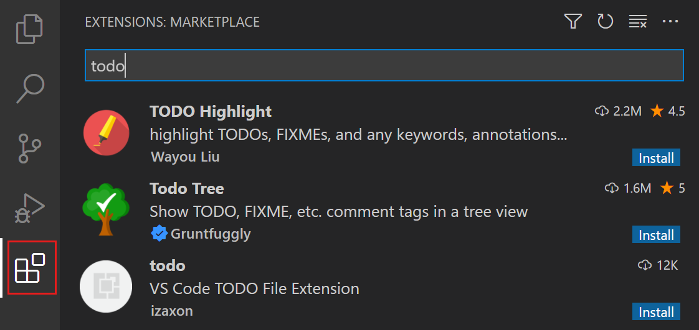
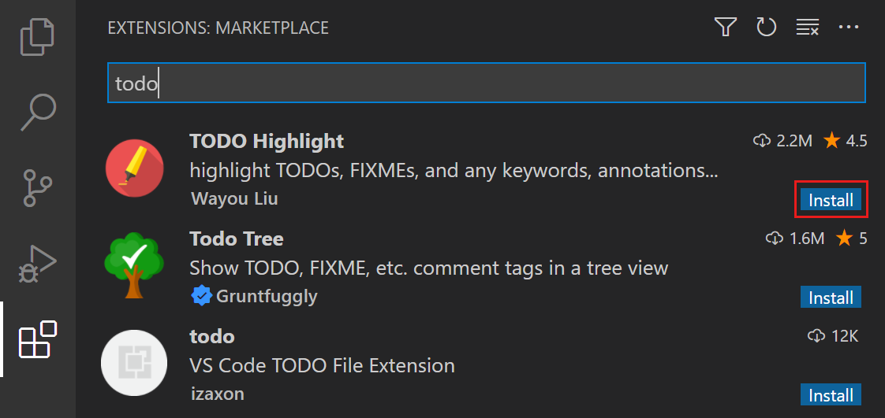
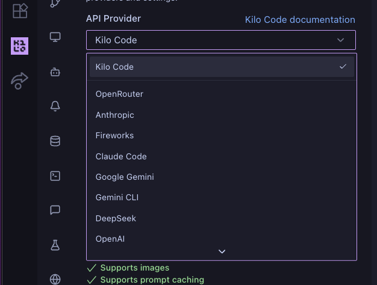
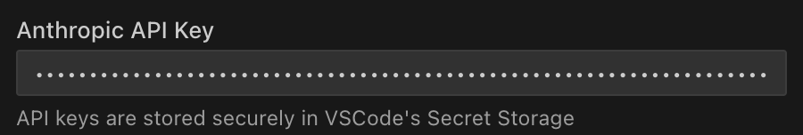

Rozszerzenia VS Code i klucz Kilo Code – przygotowanie komputera przed warsztatem „AI + otwarte dane GZM”.
Strona do wydruku dla każdego, kto przygotowuje stanowisko. Reszta przygotowania (SDK, klucz do modelu AI):
rozdziały 1–2 w docs/PROWADZACY.md.


Tak zainstaluj wszystkie cztery rozszerzenia. Po instalacji VS Code może poprosić o restart – zgódź się.
| Rozszerzenie | Fraza w wyszukiwarce | Identyfikator |
|---|---|---|
| C# (kompilator i kolorowanie) | C# | ms-dotnettools.csharp |
| C# Dev Kit (Eksplorator testów) | C# Dev Kit | ms-dotnettools.csdevkit |
| SQLite Viewer – podgląd bazy danych (plik) | SQLite Viewer | qwtel.sqlite-viewer |
| Kilo Code – asystent AI | Kilo Code | kilocode.kilo-code |
Terminal PowerShell (Start → wpisz „PowerShell”) przyjmuje też całą listę naraz:
code --install-extension ms-dotnettools.csharp code --install-extension ms-dotnettools.csdevkit code --install-extension qwtel.sqlite-viewer code --install-extension kilocode.kilo-code
Klucz Kilo (osobny na parę, z limitem) wpisuje prowadzący – uczniowie go nie przepisują i nie widzą. Kilo zapisuje klucz w bezpiecznym magazynie VS Code (Secret Storage).
git clone https://github.com/theluckyprogrammer/GZM_Workshop.git.
Zanim otworzysz folder w VS Code – Kilo przy pierwszym otwarciu czyta konfigurację z pliku kilo.jsonc w repo.GZM_Workshop w VS Code: File → Open Folder…
kilo.jsonc).
appsettings.Local.json (klucz do modelu AI, z pendrive'a prowadzącego) leży w szkielet\src\GzmApp.tools\check.cmd – wszystkie punkty OK, także „Model AI (gpt-6-luna)”.docs/PROWADZACY.md.Zrzuty ekranu: dokumentacja VS Code (microsoft/vscode-docs, CC BY 3.0 US) i dokumentacja Kilo Code (Kilo-Org/docs, Apache-2.0).
Pełne źródła: docs/obrazki/ZRODLA.md.